Лучшее веганское молоко
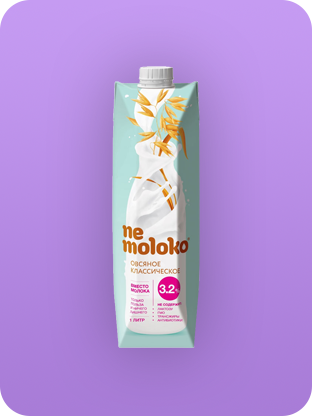448 голосов
Овсяное молоко Nemoloko
распределение голосов
Соевое молоко банановое Alpro
393
Соевое молоко ванильное Alpro
232
Миндальное молоко Alpro
152
Соевое молоко банановое Green Milk
79
Овсяное молоко ванильное Nemoloko
105
Овсяное молоко Nemoloko
448
Рисовое молоко Nemoloko
136
Молоко шоколадное Nemoloko
339
Овсяное молоко Овсяша
109
Овсяное молоко шоколадное Овсяша
95
Лучшее веган бариста молоко

307 голосов
Кокосово-соевое молоко For Professionals Alpro
распределение голосов
Кокосово-соевое молоко For Professionals Alpro
307
Молоко миндальное For Professionals Alpro
161
Овсяное молоко для бариста Oddly Good
56
Соевое молоко для бариста Nemoloko
141
Кокосовое молоко для бариста Nemoloko
193
Миндальное молоко для бариста Nemoloko
214
Лучший веган йогурт
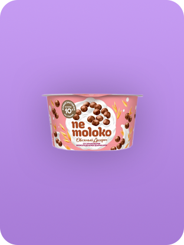419 голосов
Овсяный йогурт с шоколадными шариками Nemoloko
распределение голосов
Овсяный йогурт с клубничным мороженым Здоровое меню
92
Соевый йогурт с виноградом, фейхоа и кокосовым желе Hi
154
Овсяный йогурт с манго и маракуйя Nemoloko
177
Кокосовый йогурт с апельсином и манго Green Idea
110
Соевый йогурт с клубникой Green Idea
244
Соевый йогурт с вишней Green Idea
393
Лучший веган сыр
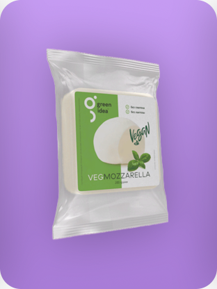244 голосов
Сыр моцарелла Green Idea
распределение голосов
Сыр копченый Volko Molko
87
Сыр Mexican DaVega
125
Сыр гауда DaVega
80
Сыр бутербродный Volko Molko
70
Сыр гауда нарезка Green Idea
216
Сыр пармезан Green Idea
197
Сыр Indian DaVega
72
Сыр Просто-Постно
125
Лучшее веган мороженое

160 голосов
Мороженое рожок шоколадный Friky
распределение голосов
Мороженое Овсянка МясновЪ
14
Мороженое (не мороженое) Сакское
52
Мороженое классическое O12
32
Мороженое шоколадное O12
32
Мороженое шоколадное Baskin Robbins
141
Мороженое Фрикерс Friky
147
Мороженое кокосовое 33 Пингвина
151
Эскимо бананово-клубничное АйсКро
81
Эскимо кокосовое АйсКро
121
Лучший веган сырок
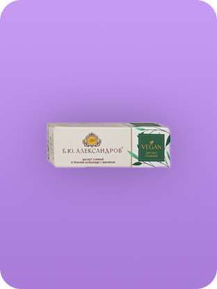454 голосов
Сырок Веган Б.Ю. Александров
распределение голосов
Сырок Сгущёнка Raw to go
84
Сырок с печенькой Friky
193
Сырок Арахисовая паста Mallakto
64
Сырок Кленовый сироп Делали дела
35
Лучший веган майонез
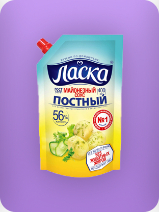447 голосов
Майонез постный Ласка
распределение голосов
Майонез постный Слобода
324
Майонез соевый ВкусВилл
87
Майонезный соус постный с лимонным соком Махеевъ
77
Майонезный соус Татарский Develey
72
Веганез Бо
19
Майонезный соус постный с жареным луком Ласка
78
Майонезный соус вегетарианский Solio Vegan
46
Лучший веган крем-чиз
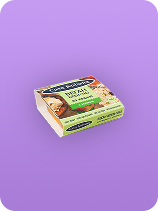112 голосов
Крем-чиз из кешью с зеленью Casa Kubana
распределение голосов
Крем-чиз грибы и розмарин Solio Vegan
76
ВегЧиз из кешью с французскими травами и чесноком Айскро
52
ВегЧиз из кешью с грибами Айскро
28
Крем-чиз классический из кешью Casa Kubana
94
Крем-чиз с артишоком и грецким орехом De Olio
100
Лучший аналог мяса
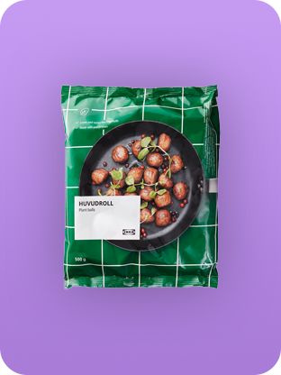369 голосов
Экодельки ХУВУДРОЛЛ ИКЕА
распределение голосов
Фрикадельки HiBalls
119
Растительный фарш HiBeef
76
Котлеты Вместо говядины Митлесс
89
Котлеты из соевого белка От Ильиной
41
Фарш растительный вместо говядины Митлесс
72
Хай бургер HiBurger
313
Фарш Welldone
130
Котлета для бургера Vegafood
63
Лучший аналог курицы

257 голосов
Котлеты со вкусом ароматной курочки неМясо Котлетарь
распределение голосов
Наггетсы Higgets
255
Наггетсы некурица Perfetto
124
Фарш растительный вместо курицы Митлесс
55
Филе вместо курицы Greenwise
88
Наггетсы с сыром и паприкой Vegafood
124
Лучший аналог рыбы
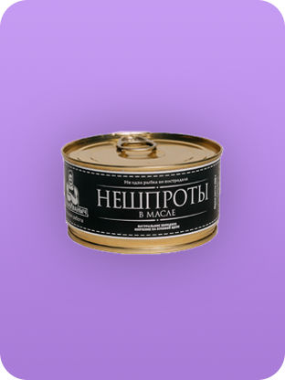266 голосов
Нешпроты Веган Иваныч
распределение голосов
Балтийский деликатес ВегановЪ
19
Палочки веганские #23 Vegafood
92
Котлеты веганские #26 Vegafood
46
Риет из альтернативного лосося Agama
24
Тофу-бычки Mallakto
36
Нешпроты Веган Иваныч
266
Лучший аналог яйца

143 голоса
Тофу-омлет Casa Kubana
распределение голосов
Заменитель яиц Polezzno
42
Не Яйцо Newa Nutrition
45
Заменитель яйца Мак Мастер
12
Заменитель яйца Mallakto
39
Лучшие веган пельмени

265 голосов
Пельмени неМясо
распределение голосов
Пельмени HiPelly
137
Пельмени Vegafood
60
Пельмени НЕМЯСО
0
Пельмени Кабан Веган
15
Пельмени Ильинка
23
Лучшие веган сосиски
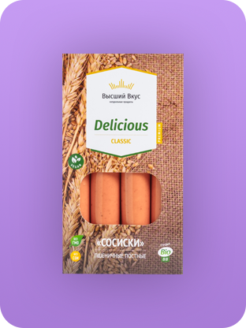229 голосов
Сосиски Delicious Высший Вкус
распределение голосов
Сосиски Botanik Высший Вкус
225
Сосиски Нежные Высший Вкус
212
Сардельки Шпикачки Высший Вкус
114
Сосиски классические Vegafood
42
Сосиски с капустой Микоян
61
Сосиски с паприкой Микоян
115
Сосиски Венские Митлесс
66
Сосиски для жарки НЕМЯСО
63
Сосиски Мергез Митлесс
45
Лучшая веган колбаса
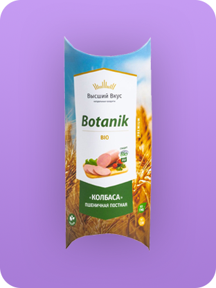198 голосов
Пшеничная Высший Вкус
распределение голосов
Краснодарская Высший Вкус
142
Таллинская Высший Вкус
157
Сервелат VEGO
175
Классическая колбаса Vegafood
100
Нежирная колбаса VEGO
45
Колбаса с грибами Велком
49
Классическая колбаса Велком
66
Колбаса для поста с грибами Микоян
68
Колбаса Экстравюрст Самокат
128
Лучший веган паштет
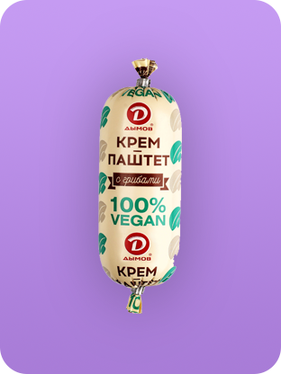199 голосов
Паштет с грибами Дымов
распределение голосов
Паштет с баклажаном Гродфуд
165
Паштет с луком Дымов
100
Паштет Барбекю Casa Kubana
95
Паштет Докторский Casa Kubana
53
Морской паштет Casa Kubana
130
Паштет по-японски Casa Kubana (во ВкусВилл)
138
Паштет Сиеста Casa Kubana
31
Паштет Белый нут Perva
93
Паштет Лесные грибы Perva
88
Лучший тофу

210 голосов
Классический тофу Сельский Дом:
распределение голосов
Копченый тофу ВегановЪ
95
Классический тофу Королевский
87
Тофу с базиликом Сельский Дом
89
Тофу с оливками Сельский Дом
74
Тофу классический Ясо
164
Тофу копченый Mallakto
136
Тофу копченый Соймик
96
Тофу классический Соймик
122
Тофу с грибами Ясо
59